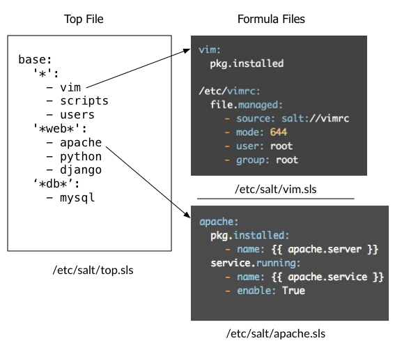

You'll learn how to:
Estimated time: 15 minutes
Difficulty:
When you created the top.sls file in the previous section, you defined where and what. Now it is time to go into detail about the how using Salt formulas.
Salt formulas define exactly what you mean when you say "this system should have vim." For example, if you can't image vim without your perfect vimrc file, you can make that part of the vim formula. Each entry in your top file has a corresponding formula that explains how to achieve a particular state.
For example, here are a few different formulas for 'vim':
vim: pkg.installed |
vim:
pkg.installed
/etc/vimrc:
file.managed:
- source: salt://vimrc
- mode: 644
- user: root
- group: root |
vim:
pkg:
- installed
{% if grains['os_family'] == 'RedHat' %}
- name: vim-enhanced
{% else %}
- name: vim
{% endif %} |
The important thing to understand is that your vim formula can be customized for your environment, and can be as complex or as simple as you like. The salt community maintains a massive repository of salt formulas that you can fork and make your own, our you can derive your own from the ground up.
For now, create a /etc/salt/vim.sls file that contains a definition for the 'vim' state referenced in our top.sls file:
vim: pkg.installed
Also create an /etc/salt/apache.sls file for the 'apache' state:
apache:
pkg.installed []
service.running:
- require:
- pkg: apache
apache:
apache:
pkg.installed: []
service.running:
- require:
- pkg: apache
/var/www/index.html: # ID declaration
file: # state declaration
- managed # function
- source: salt://webserver/index.html # function arg
- require: # requisite declaration
- pkg: apache # requisite reference